一句话定义：一个 1TB 的有损压缩包
Karpathy 给 LLM 下的第一个定义，也是全场最重要的一句：大语言模型本质上是一个约 1TB 的、有损且概率性的「互联网压缩文件」。它不是数据库，不是计算器，也不是搜索引擎——你一直在跟一个压缩包说话。
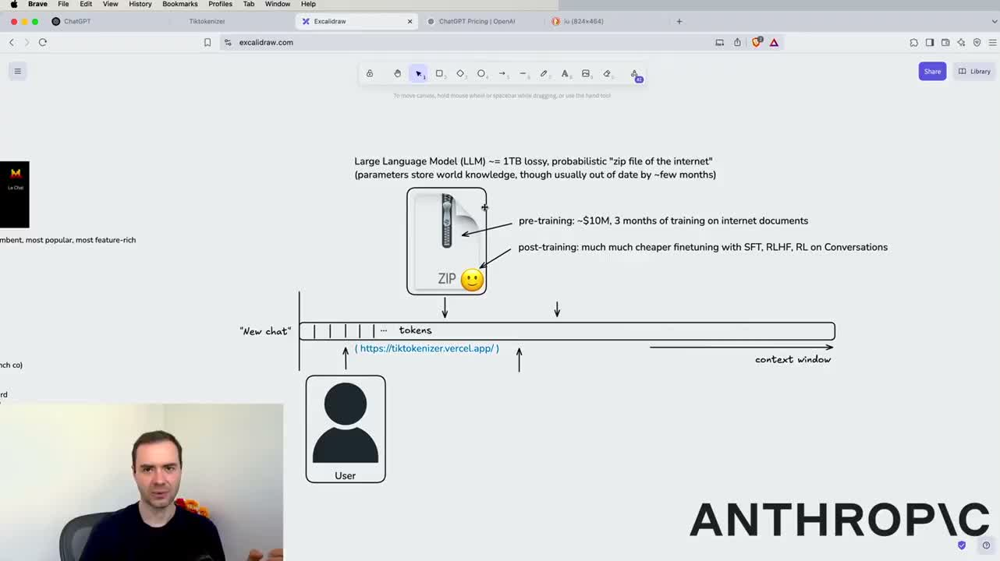
自包含的实体
把语言模型想象成磁盘里的一个 1TB 文件，对应神经网络里一万亿个参数及它们的精确配置。这个实体唯一的功能是：生成序列中的下一个 token。
它默认什么都没有
没有计算器，没有 Python 解释器，也不能浏览万维网。这些能力要靠工具调用额外接上，不是模型自带。
知识是有损的
参数里存的是「世界知识」，但通常过时几个月——因为它读的是几个月前的互联网快照。这是后面「知识截止」问题的根源。
它是怎么练出来的：预训练 与 后训练
一阶段啃下整个互联网，二阶段学会好好说话。两个阶段的成本差着一两个数量级，这也解释了为什么各家都在卷预训练，而普通用户能感受到的差别大多来自后训练。
预训练 pre-training
约 1000 万美元、耗时 3 个月，在互联网文档上训练。产出的是「世界知识」和一个会续写文本的基座。
后训练 post-training
成本低得多，用 SFT（监督微调）、RLHF（基于人类反馈的强化学习）、RL 在对话数据上打磨。产出的是「助手风格」——你现在感受到的礼貌、结构化、愿意帮忙，全是这一阶段的成果。
两半合在一个产物里
你默认正在交互的，是一个把这两部分都整合好的单一实体。知识来自预训练，语气和对话能力来自后训练。
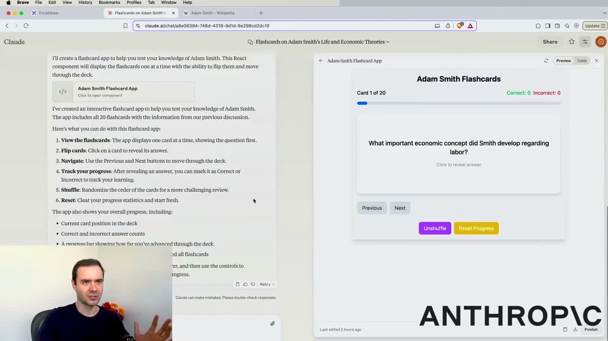
上下文窗口：模型的工作记忆
点「新建对话」时，模型开启一条一维 token 序列。你写 token，回车后控制权交给模型，模型输出自己的 token，遇到「我说完了」这个特殊 token 再把控制权还给你。这条不断增长的序列就是 context window。
它不是无限长的笔记本
窗口里的 token 越多，模型生成下一个 token 时就越容易被前面的内容分散注意力，准确率和表现都会下降。
token 越多，越慢越贵
涨幅不大但确实存在：计算下一个 token 的成本随 token 数量上升，模型会稍微变慢。
把上下文当宝贵资源
不要用无关信息塞满它，尽量保持精简。长对话跑到后面「变笨」，很多时候不是模型退化，是你把它的工作记忆占满了。
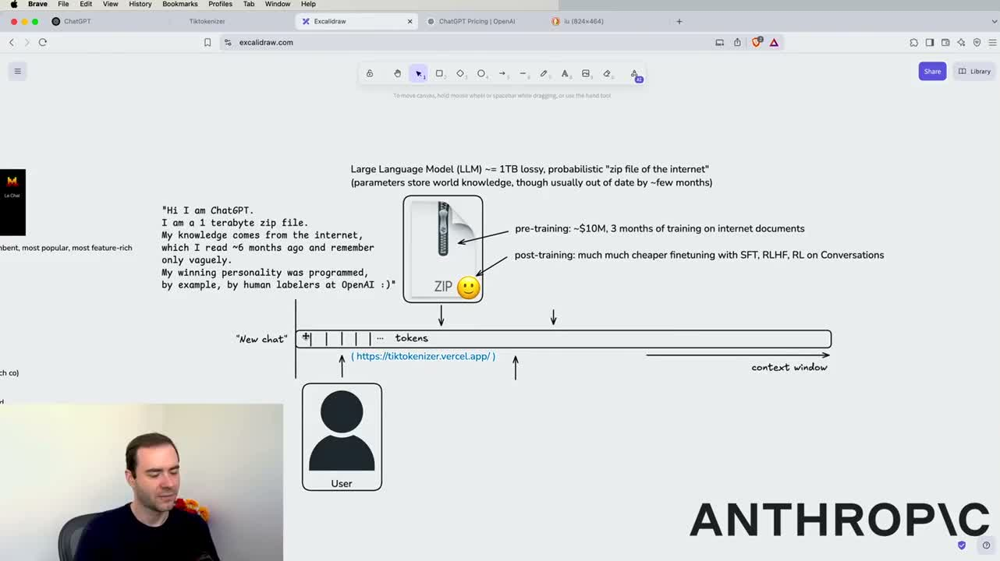
模型生态：别只用一个，建个委员会
ChatGPT、Gemini、Copilot、Claude、Grok、Perplexity、DeepSeek、Le Chat——同一个问题喂给多个模型，交叉验证。Karpathy 把这叫他的 LLM 委员会。
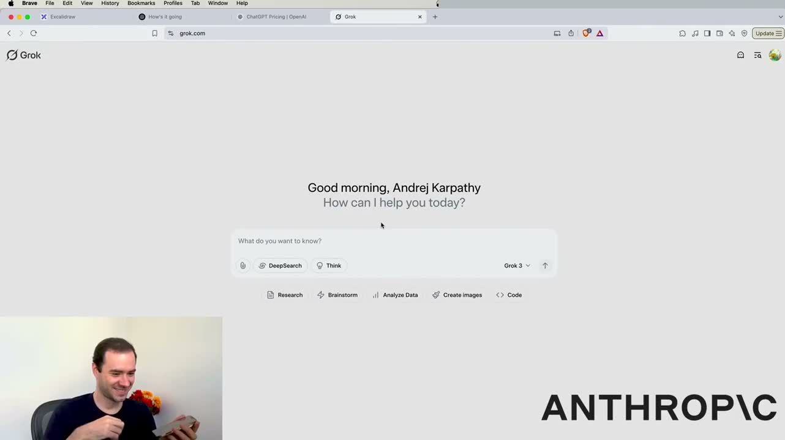
确认自己用的是最新版
界面左上角一般有模型选择器，付费升级才能拿到更先进的档位。别用 Grok 2 提问却以为在跟 Grok 3 对话。
同题多投
把同一个问题丢给好几个不同价位、不同厂商的模型，看它们各自怎么答。分歧点往往就是要你自己判断的地方。
不同模型工具权限不同
这是下一章的关键伏笔：有的模型能调 Python，有的只能靠心算——遇到数学和代码，结果会差很远。
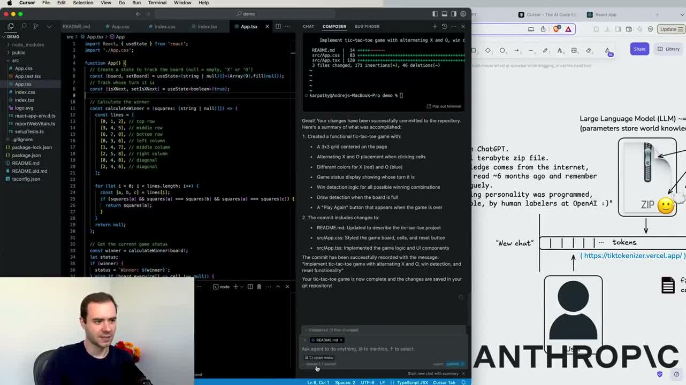
思考模型：什么时候值得让它多想一会儿
各厂商陆续推出了 thinking model。它们在数学、代码这类难题上明显更准，但日常问题让它想一分钟纯属浪费。Karpathy 自己平时默认用 non-thinking model，要质量时才切换。
难题才值得想
数学、代码、多步推理——这类问题 thinking model 能提升准确率。旅行建议、写文案、日常问答，没必要。
怎么开
以 Grok 为例：输入框下方有 Think 开关，先打开再点发送，底层就会切到思考模型。各家的叫法和位置不同，但都有这个选择器。
顺带看它想什么
OpenAI 不会完整展示思考过程，只给一份简略的思考摘要。这份摘要有时候比答案更能说明它卡在哪。
工具调用：从聊天到干活
这是整场讲座最实用的一章。LLM 一旦接上工具，就从「会说话的压缩包」变成「能办事的代理」。你要特别留意手上每个模型到底有哪些工具——权限不同，结果天差地别。
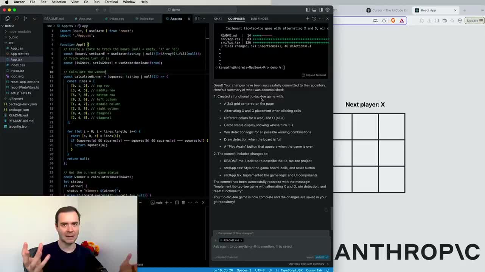
三类核心工具
互联网搜索 / 深度研究、Python 解释器（跑代码做计算）、以及各家自研的形态——ChatGPT 的 Advanced Data Analysis、Claude 的 Artifacts、Cursor 的 Composer。
有解释器和没解释器，是两种模型
Karpathy 现场对比：ChatGPT 正确调用编程语言算出了乘法，Grok 3 没有 Python 权限、纯靠心算，结果居然也非常接近。但遇到更复杂的题，差距就会拉开。
让模型写代码，而不是自己心算
凡是涉及精确计算的题，先问它「你能不能写段代码算一下」。这是性价比最高的一招。
Deep Research：联网搜索 + 深度思考
Karpathy 称之为「特别酷但被严重低估」的功能。本质上就是联网搜索叠加长时间思考，模型自己跑几十分钟，查几十个来源，吐出一份带引用的报告。
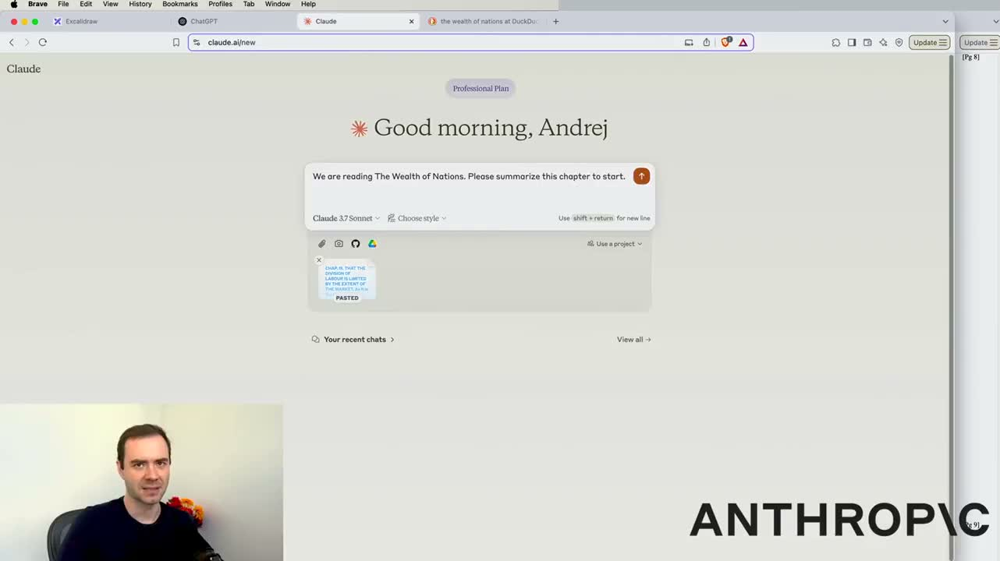
门槛与产出
最早由 ChatGPT 作为 Pro 订阅的一部分推出（每月 200 美元档位）。一次运行会查阅几十个来源，给出结构化报告加参考文献。
现场对比
同一个 CaAKG 问题，ChatGPT 思考五分钟、查阅 27 个来源；Perplexity 和 Grok 的报告更短、细节更少。ChatGPT 的报告提到了线虫、果蝇、小鼠中的研究与人体试验。
报告是初稿，不是结论
哪怕它真的在查资料，也没法保证完全没有幻觉——任何内容在任何时候都可能是编造的。引用极其重要，要顺着引用去查原文。
多模态：不只文字，还有图像与声音
从读论文到看视频，LLM 的输入输出早已不止文字。Karpathy 现场演示了几个让阅读门槛骤降的用法。
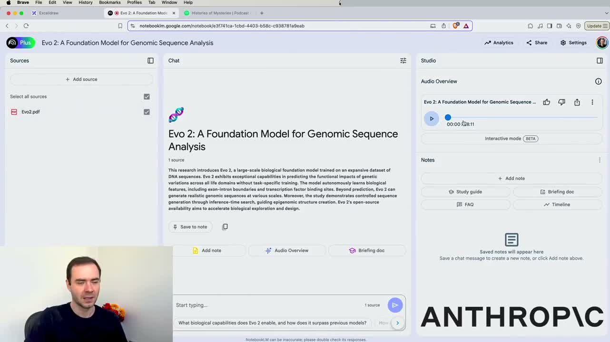
边读边问，记忆留存翻倍
把整本书（如《国富论》）丢给 Claude，边读边当场提问。Karpathy 的体会是：对陌生领域的文档，这种用法让理解深度提升非常明显。
老文献尤其需要帮手
1776 年的文本，连最基础的语言习惯都得靠解释。LLM 让很多原本读不动的内容变得可及。
视觉能力还能这么用
上传一张补充剂营养成分表让它转录；开着摄像头让它认书架上的书、看《指环王》地图、读 CO₂ 检测仪读数（713 ppm 属正常室内水平）。
视频输入是最新前沿
原始幻灯片上，Video input（Advanced Voice + video）被特意高亮——这是当时最新、大家还不太熟悉的能力。
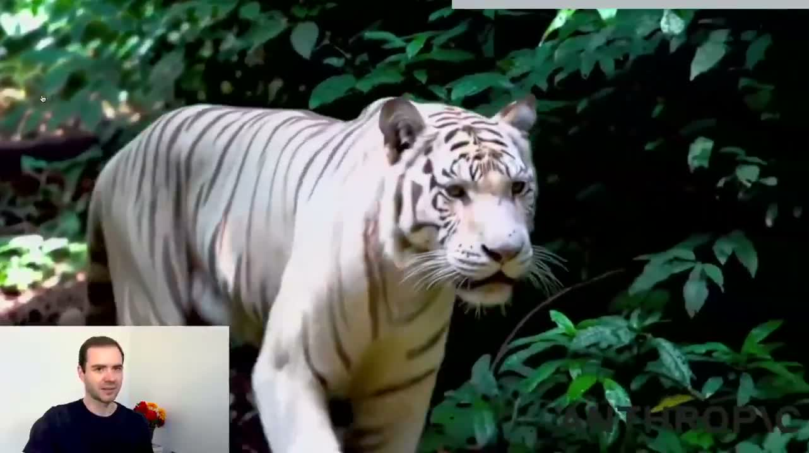
记忆与自定义：把模型调成你的
最后一类功能，Karpathy 称之为「生活质量功能」——不提升智力，但大幅提升顺手程度。核心是三件事：记忆、自定义指令、自定义 GPT。
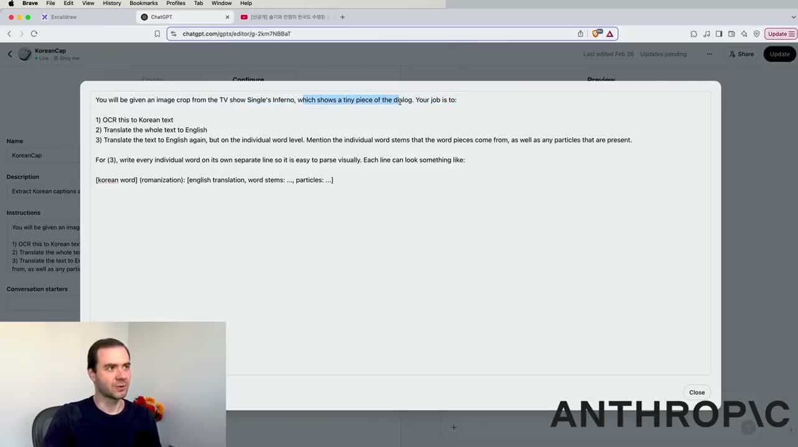
Memory 记忆功能
让模型跨对话记住你的偏好、背景、常用信息。不用每开一个新对话就重新自我介绍一遍。
Custom instructions 自定义指令
用你喜欢的任何方式写一份长期生效的指令，之后每次对话都自动带上。这是零成本的个性化。
Custom GPTs 自定义 GPT
把一套固定流程打包成一个专用入口。Karpathy 举的例子：截图韩剧字幕 → OCR → 翻译 → 再做单词级语法解析，三步全自动。
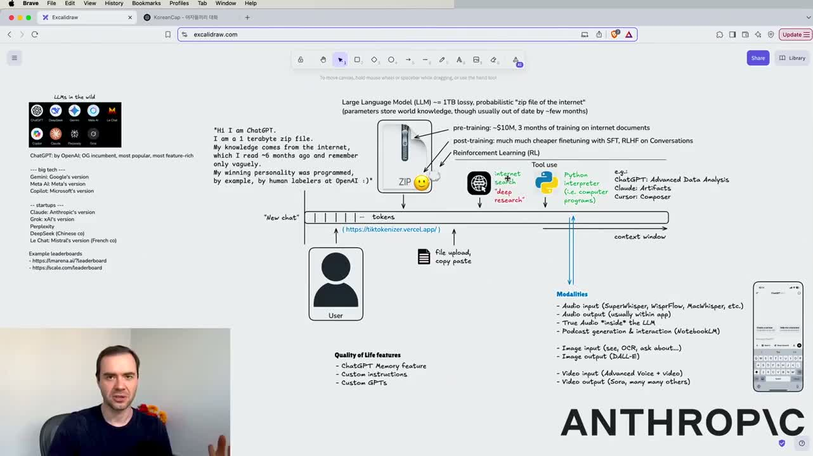
收尾：一张图带走整场讲座
最后 Karpathy 演示了「同一个 gradient check 报错喂给一堆模型」的横向对比——O1 Pro 想了一分钟才给出正确解法，而 Claude 3.5 Sonnet 作为非推理模型，也直接定位到了真正的问题。推理强度不是唯一变量，值得你自己试。

LLM 是个压缩包
知识有损、会过时、细节会编。所有使用习惯都该从这个前提出发。
上下文是宝贵资源
它是模型的工作记忆，塞满会降智。跑偏就开新对话。
工具决定上限
先问「这个模型有没有 Python、能不能联网」。没有工具的模型，遇到计算和时效性问题就是另一回事。
别只用一个模型
建你的 LLM 委员会，同题多投，分歧处自己判断。
引用是生命线
凡是带引用出来的内容，都要顺着引用回查原文。报告是初稿，不是结论。